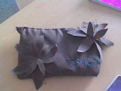
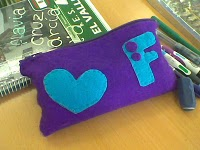

WEB
OTROS
ESTUCHE DE TELA.
El proyecto consiste en crear un estuche con tela, con la posibilidad de utilizar para el cierre una cremallera, botones,.... El tipo de tela también es a libre elección, así como los posibles adornos a utilizar.
 
CNC HECHA CON ARDUINO
La cnc se implementó con una herramienta dremel y unas fresas especiales para cortar marquetería.
CINTA TRANSPORTADORA
Proyecto cinta transportadora,estructura de madera, rodillos de pvc, cinta de gomaeva, motor con reductora, alambre, etc.